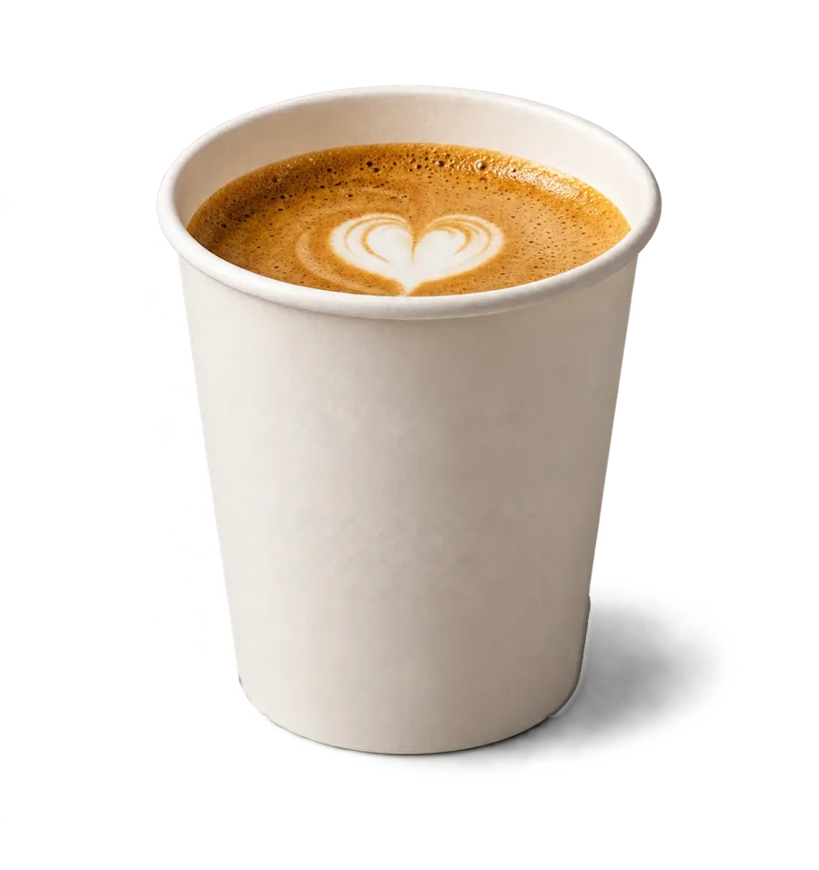
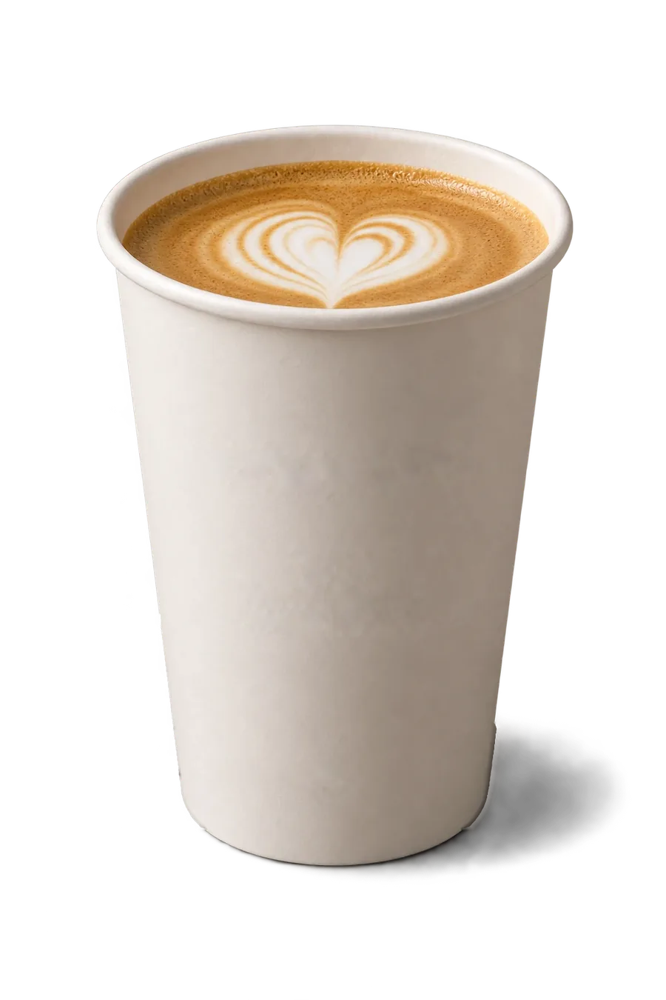
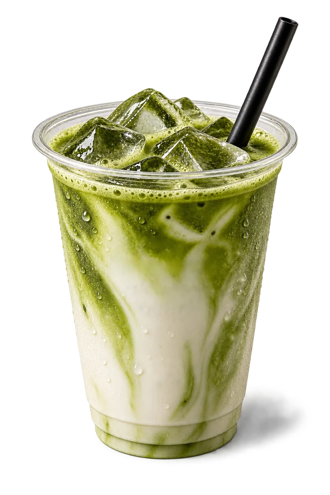
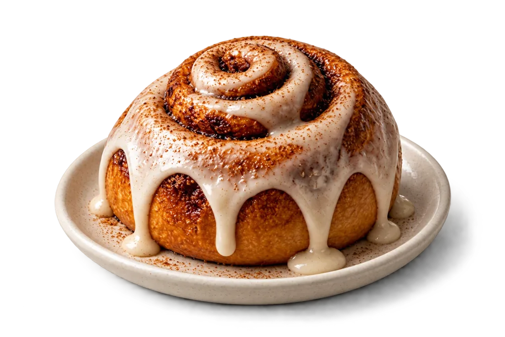
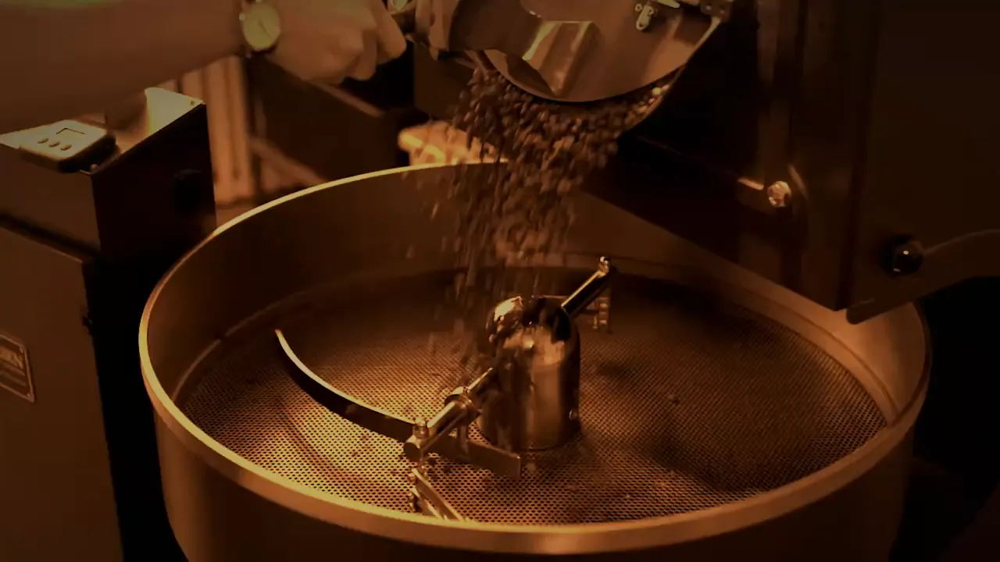
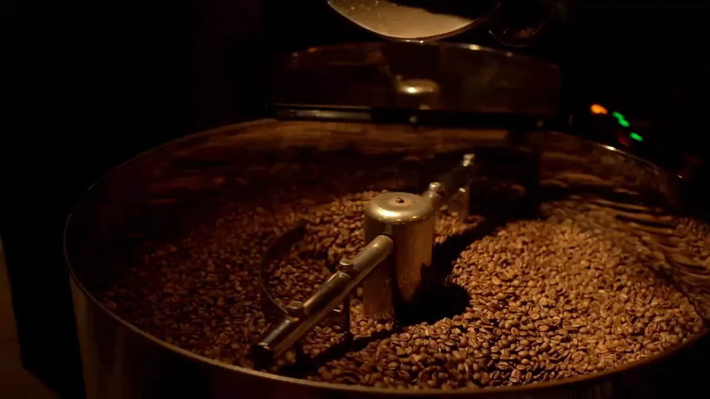
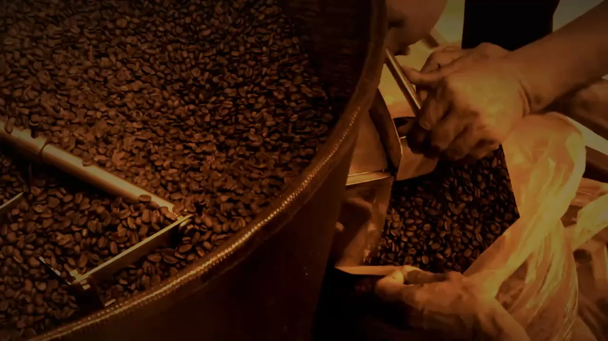
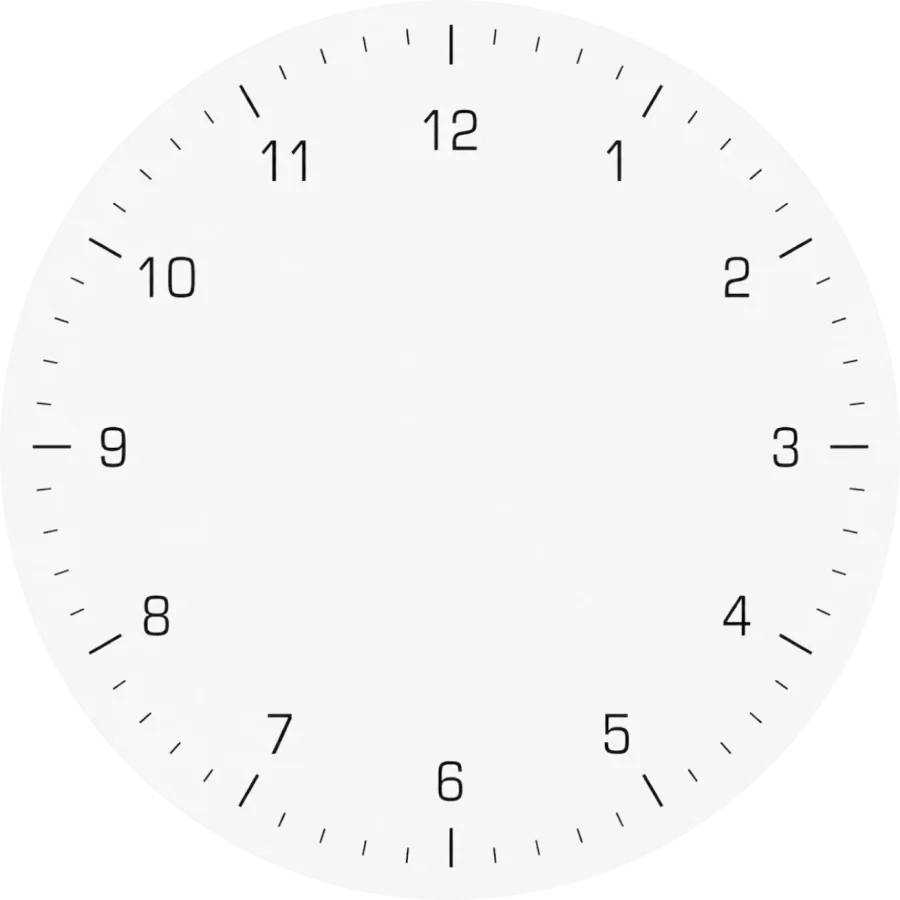

01

Cortado
Brasilien
Espresso mit wenig warmer Milch, kurz und rund. Geschmack: Kakao, Haselnuss.
// Kaffeerösterei · Berlin
Kaffee aus eigener Röstung, ruhig zubereitet. Zum Bleiben an der Bar oder für den Weg in den Tag.
Zur Karte// unsere Karte
Vier Lieblinge von der Bar und aus der Backstube. Bei jedem steht dabei, woher es kommt.
01

Brasilien
Espresso mit wenig warmer Milch, kurz und rund. Geschmack: Kakao, Haselnuss.
02

Kolumbien
Doppelter Espresso unter feinem Milchschaum. Geschmack: Karamell, Milchschokolade.
03

Japan
Matcha aus Uji, Hafermilch und Eis. Geschmack: grasig, mild, cremig.
04

Backstube
Hefeteig mit Zimt und Kardamom, jeden Morgen gebacken. Geschmack: warm, würzig.
// Röstung · jeden Donnerstag
Einmal in der Woche läuft die Trommel. Was Sie hier sehen, steht ein paar Tage später bei uns im Regal.

01 / 03
Farbe, Duft und Knacken stimmen. Die Klappe geht auf, und die Bohnen fallen aus der Trommel ins Kühlsieb.

02 / 03
Der Rührarm dreht, kühle Luft zieht durch. So bleibt die Röstung genau dort stehen, wo wir sie haben wollen.

03 / 03
Noch handwarm kommen die Bohnen von Hand in den Sack. Dort ruhen sie, bevor sie in die Tüte dürfen.

// unser Haus
GeöffnetMo–Fr 07–18Sa–So 09–17
Bleiben Sie für ein Gespräch oder nehmen Sie den Becher mit. Beides geht ohne Aufwand. Hier wird nichts gehetzt, und nichts hält Sie länger als geplant.
// unsere Haltung
Wir kümmern uns um den Kaffee. Sie um Ihren Tag.
Bestellen Sie vorab, und Ihr Becher wird gebrüht, wenn Sie kommen, nicht davor. Probieren Sie es aus: Wählen Sie ein Getränk, der Drucker gibt den Bon aus.
Vorführung · es wird nichts gesendet